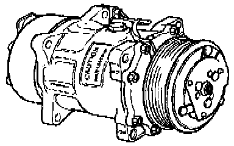

Compressor HVAC: Description and Operation

The compressor is driven via a belt on the engine when the A/C clutch engages (A/C ON).
Low-pressure refrigerant gas from the evaporator is corn-pressed by the compressor. After compression, the refrigerant gas (now high-pressure) flows to the condenser.
NOTE:
- The compressor contains refrigerant oil (PAG oil) that is mixable under all temperatures with R-134a refrigerant.
- A label on the compressor indicates that compressor is for R-134a systems only.